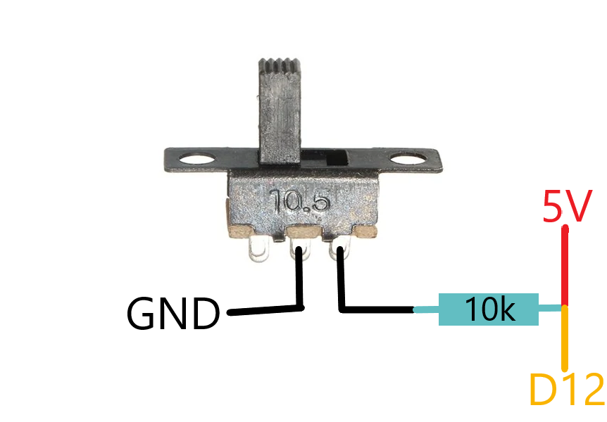

1. Quelle utilisation ?
_______ Dans ce projet, le composant le plus simple que nous allons utiliser est l'interrupteur. Il conviendra donc de commencer ce cours par ce composant. L'interrupteur que nous allons utiliser peut prendre deux positions différentes et va permettre d'introduire la notion de résistance de pull-down (tirage vers le bas pour les francophones). Comme dit dans le premier cours, le servomoteur permettra de descendre et monter l'avant du robot pour que ce dernier reste dans la taille autorisée : 10cm x 10cm. Le bouton permettrra donc de gérer les deux modes du robot : le mode classique de combat mais aussi le mode afin de relever l'avant du robot pour qu'il entre dans les normes.

2. Le câblage
_______ Voyons tout d'abord sur quelle entrée/sortie de l'Arduino brancher notre interrupteur. Notre interrupteur est un capteur. Si nous voulons schématiser, nous pouvons dire que l'information sort de l'interrupteur et entre dans la carte Arduino. Cette information peut prendre deux valeurs, l'état haut (1) et l'état bas (0). Nous allons donc le brancher sur une des entrées/sorties numériques de l'Arduino, dans notre cas D12.
_______ Si je vous demande de brancher ce bouton, vous allez sûrement brancher une des pattes sur une sortie 5V et l'autre sur une sortie numérique de l'Arduino. Cependant, si vous faites cela et que vous ouvrez le moniteur série de l'Arduino (nous verrons cela juste après) vous verrez que lorsque l'interrupteur n'est pas activé, il y a des interférences qui se représentent par des états haut alors que l'interrupteur devrait être à l'état bas. Cela est dû aux ondes électromagnétiques provoquées à tous les appareils de la maison, en effet lorsque l'interrupteur est ouvert le fil est en quelque sorte dans le vide.
_______ Il suffit donc de mettre une résistance de pull-down, c'est une résistance de rappel. Cette résistance va permettre d'empêcher les ondes électromgagnétiques d'interférer dans votre circuit. Vous aurez donc un signal qui sera à l'état haut lorsque l'interrupteur est fermé et à l'état bas lorsque l'interrupteur est ouvert. Cette résistance est reliée au bouton d'une part et à la masse d'autre part (d'où le "down" dans "pull-down").
Mais comment dimensionner cette résistance ?
_______ Il suffit d'utiliser cette équation : R(la valeur de la résistance) = V(la tension dans le circuit) / I(le nombre d'ampère que l'on souhaite limiter). Pour des petits montages électroniques avec Arduino, il est commun d'utiliser une résistance de 10kΩ (Ohm), c'est ce que nous allons faire ici.
_______ Pour votre culture il est aussi possible d'utiliser une résistance de pull-up qui est préférable, appelée aussi résistance de tirage. Cela fonctionne exactement de la même manière mais il suffit de relier la résistance au 5V (dans notre cas). Il y a même des résistances de pull-up interne, il suffit d'écrire pinMode(votre_entré, INPUT_PULLUP); dans le setup. Cependant nous n'allons pas utiliser cela car nous avons démonté la carte comme nous l'avons vu dans le chapitre 2. De plus cette résistance a une valeur trop forte (entre 20 et 50kΩ).
3. La programmation
_______ La programmation est la partie la plus simple de cette leçon. En effet, il suffit seulement de réaliser deux boucles. La première permet d'activer la fonction principale du robot, la fonction de combat. La deuxième permet de relever l'avant du robot pour rester dans les normes exigées : 10cm x 10cm. Commençons par analyser de manière linéaire le code. La première ligne permet de définir le pin du bouton, avec le #define. Cette variable ne prendra pas de place dans la mémoire du microcontrôleur car la valeur est remplacée avant la compilation du programme. C'est le contraire de la définition de la variable suivante qui va stocker la valeur de l'interrupteur. Dans le setup, on va initialiser le port série pour des tests et l'interrupteur en une entrée. Dans le loop, on va lire l'information et la stocker dans une variable déjà prédéfinie. Pour nos tests, on va afficher la valeur de la variable etat_interrupteur dans le moniteur série. On va ensuite, selon la valeur de l'interrupteur effectuer le programme afin de combatre ou de relever l'avant du robot.
#define PIN_BOUTON 10
int etat_bouton;
void setup() {
Serial.begin(9600);
pinMode(PIN_BOUTON, INPUT);
}
void loop() {
etat_bouton = digitalRead(PIN_BOUTON);
Serial.println(etat_bouton);
if(etat_bouton == 1){
//combat du robot
}
else{
//relever l'avant du robot
}
}